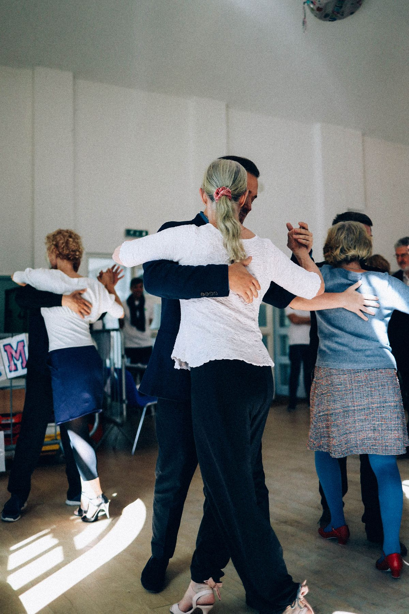
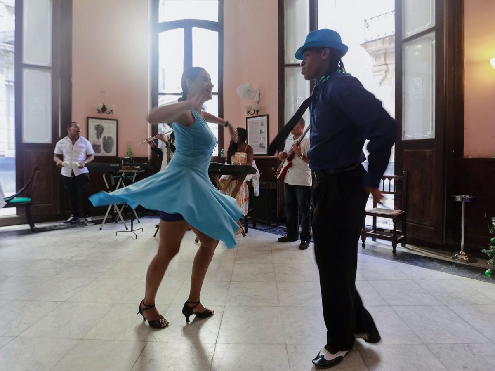

Beginner lessons
East Coast Swing and Lindy Hop for people just starting out. Beginner lessons run from 7:00 to 7:30 PM on dance Saturdays.
The Oklahoma Swing Syndicate (TOSS)
Tulsa, Oklahoma
The Oklahoma Swing Syndicate is a nonprofit swing dance organization in Tulsa. The group runs beginner and intermediate East Coast Swing and Lindy Hop lessons, social dances, workshops, live band nights, and themed dances.
East Coast Swing and Lindy Hop for people just starting out. Beginner lessons run from 7:00 to 7:30 PM on dance Saturdays.
Intermediate lessons run from 6:45 to 7:30 PM on dance Saturdays, for dancers building on the basics.
Social dances run from 7:30 to 10:00 PM, almost every first and third Saturday.
Workshops, live band nights, and themed dances are part of the calendar through the year.
Weekly dances are $5 for members and $7 for non-members. Band nights are $10 for members and $15 for non-members. Annual membership is $15.


All photos on this page are stock photos, not photos of this business.